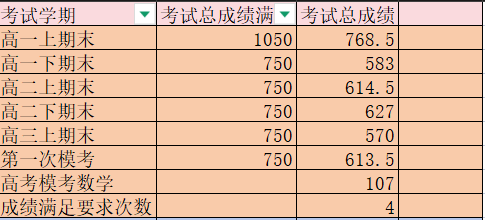
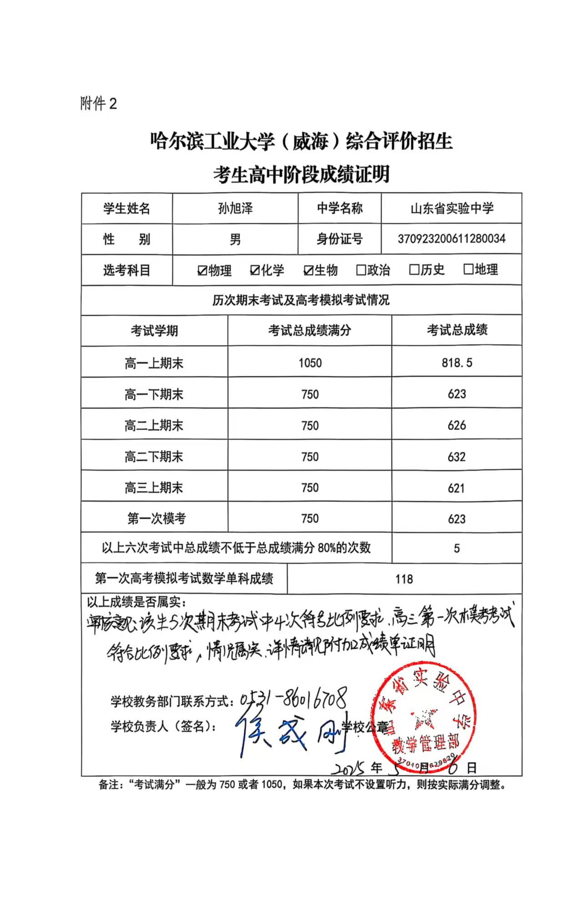
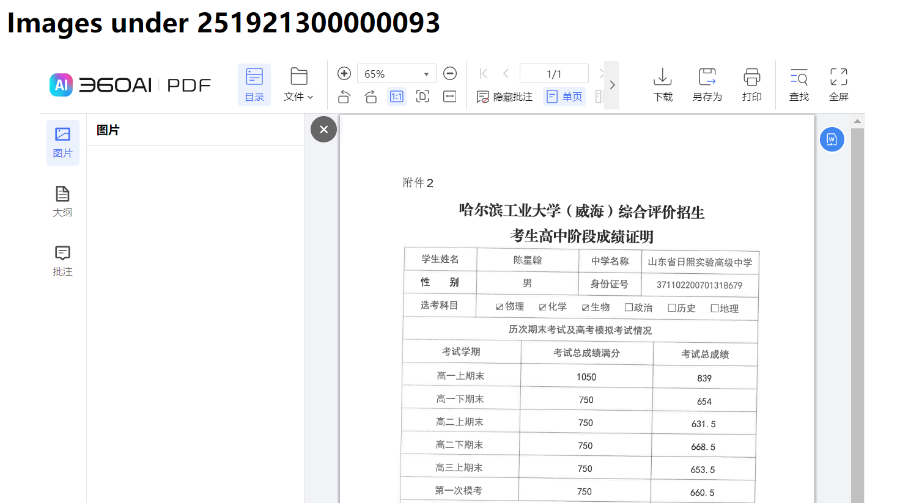

主要工作
将考生高中阶段成绩证明中的成绩信息转填到Excel中，同时检查一些基本信息的正确与否。
填写示例：

注：其中最右侧一列为备注栏，用于记录异常情况。
审查项目
审查项目中所有不合规定的地方均在备注中注明，若无特殊要求只需要说明异常原因即可。
正常情况下链接中应当有我们统一格式的成绩证明：

基本信息
是否提交了成绩证明（必须是我们的统一格式），否则标注【无效+所属高中】，特别说明一点，只要没有这张表，不管交了什么都是无效
签名是否齐全、“属实”两个字、日期等是否填写
成绩
“总成绩满分”和“总成绩”是否写反
成绩满足要求的次数和填写是否一致，若不一致表格中的次数填实际次数
盖章
要求加盖学校公章，且除了山东省实验中学、济南市历城二中以外，其他学校不能是教务部门的章。
注意确认一下盖章和中学名称是否一致。
注意事项
空白页
空白页说明这个考生没有提交相关材料，可以跳过
提交PDF
部分考生提交的是PDF文件而非大多数的图片格式，这部分内容手机端打不开但电脑可以，建议用电脑填写。
形如：
